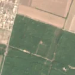
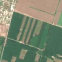

11,7 ha de pădure schimbată lângă Ocolna
Între vara lui 2025 și 27 mai 2026, pe aproximativ 11,7 ha de pădure din orașul Dăbuleni, lângă Ocolna, județul Dolj, imaginile Sentinel-2 arată că vegetația a dispărut sau s-a schimbat puternic. Nu pare o tăiere de lemn.
Autorizația de tăiere
nu e tăiere de pădure
Schimbarea nu pare tăiere de lemn, așa că autorizațiile de tăiere nu se aplică. Analistul AI vede teren agricol: arătură sau recoltă, nu pădure tăiată.


Înainte și după: Copernicus Sentinel-2, 10 m pe pixel, conturul zonei cu portocaliu. Poza detaliată (Esri World Imagery) e de acum 1–4 ani: arată ce era acolo înainte, nu tăierea.
Pe scurt
- Identificator
- 20260527_43874_24148
- Locul
- Ocolna, orașul Dăbuleni, județul Dolj (SIRUTA 72007)
- Coordonate (centru)
- 43.87424, 24.14803 · Google Maps · OpenStreetMap
- Suprafața
- 11,7 ha (din pixeli de 10 m; ± câțiva pixeli pe margine)
- Pădurea întreagă
- în vara lui 2025 (de atunci, nori sau iarnă)
- Prima imagine cu schimbarea
- 27 mai 2026
- Imagini în care se vede schimbarea
- 7
- Cât de sigur e semnalul din satelit
- scăzută
- Autorizația cea mai apropiată
- APV 2600081800070 · Ocolul Silvic Dăbuleni, valabilă 27 februarie 2026 – 11 octombrie 2026, la 0 m de zonă
- Terenul
- pădure de stat, după amenajamentul silvic publicat
- Pădure pierdută în jur, alți ani
- 2015, 2025 (Hansen)
- Garda Forestieră
- Râmnicu Vâlcea
Dacă vrei să verifici sau să sesizezi
- Pădurile din județul Dolj sunt în grija Gărzii Forestiere Râmnicu Vâlcea, care controlează tăierile și dă amenzile.
- Autorizația găsită în zonă e emisă de Ocolul Silvic Dăbuleni.
- Formularul Gărzii Forestiere Naționale primește sesizări și fără nume. Trimite linkul acestei pagini, coordonatele și pozele. Dacă tăierea e în desfășurare, sună la 112.
- Autorizațiile și transporturile de lemn se pot căuta în Inspectorul Pădurii.
Pagina arată ce se vede din satelit și ce scrie în registrul public; nu e o dovadă în sine.
Cum citezi zona
Linkul acestei pagini nu se schimbă. Dacă zona iese vreodată de pe hartă, pagina rămâne, cu data și cu ce știam despre ea.
Pădurea RO, zona 20260527_43874_24148: 11,7 ha, Ocolna, orașul Dăbuleni, județul Dolj; schimbare văzută din satelit între vara lui 2025 și 27 mai 2026. https://iliemihai.github.io/padurea-ro/zona/20260527_43874_24148/ (consultat la [data]). Date: CC BY 4.0.
Datele zonei: GeoJSON · toate zonele: date deschise · licența CC BY 4.0.
Istoricul zonei pe hartă
Starea se poate schimba când registrul publică o autorizație sau când analistul vede poze mai bune. O ținem aici, ca un link citat să arate și ce spuneam atunci.
Pe hartă cel târziu din 5 noiembrie 2026.
- 5 noiembrie 2026 – azi · nu e tăiere de pădure
Detalii tehnice, pentru verificare
De ce acest nivel de încredere:
- văzută schimbată în 7 imagini diferite
- peste 3 ha
- ultima dată am văzut-o intactă în vara lui 2025 (de atunci, nori sau zăpadă)
- AI-ul vede teren agricol
- Placa Sentinel-2
- 34TGP
- NDVI de referință
- 0.82
- NBR de referință
- 0.6
- Scăderea în pădurea din jur
- 0.06
- Persistență
- 0.84
- NDVI / NBR după
- 0.469 / 0.104
- Analistul de zi (model)
- agricol · 0.8 · claude-haiku-5-5
Cum se calculează fiecare: metodologia.
Pune harta zonei într-un articol
Copiază codul în articol (merge în majoritatea site-urilor de știri). Sau pune doar linkul: WhatsApp, Facebook și X arată singure poza zonei.